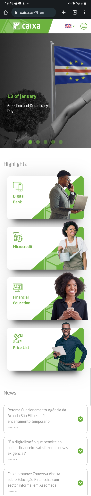
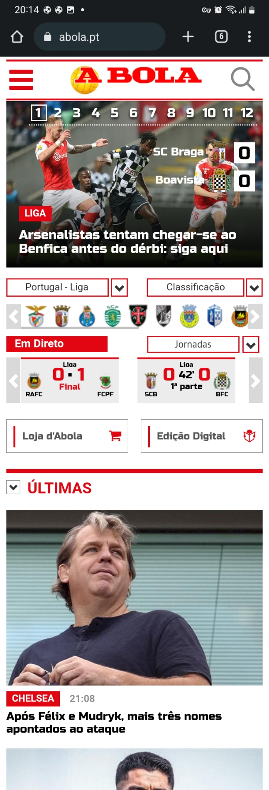
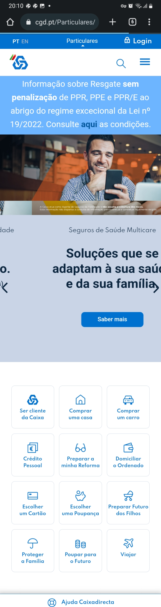

https://www.caixa.cv/?l=en

In this example of the Caixa website, we can clearly see applied at least 2 principles, Visual Hierarchy; and White Space and Clean Design. We can clearly see that the website guides the user by showing from top to bottom which contents are most relevant, according to the space they occupy within the page. On the other hand, we have a page with a clean design and well presented, not saturating the user's view, the elements are presented in a harmonious way.
https://abola.pt/

In the example of A Bola's website, we see that they use the PARC: Contrast principle very well, because the way they highlight some aspects/information within the website is very focused on the visual highlight of the information in relation to the background and/or in relation to nearby elements.
https://www.cgd.pt/Particulares/Pages/Particulares_v2.aspx

In the case of CGD, we have a mixture of PARC:Repetition and Contrast, since throughout the website each component is very similar to each other, making it easy for the user to identify himself as being on the CGD site. We can also note the clean design and perfect alignment of the elements.